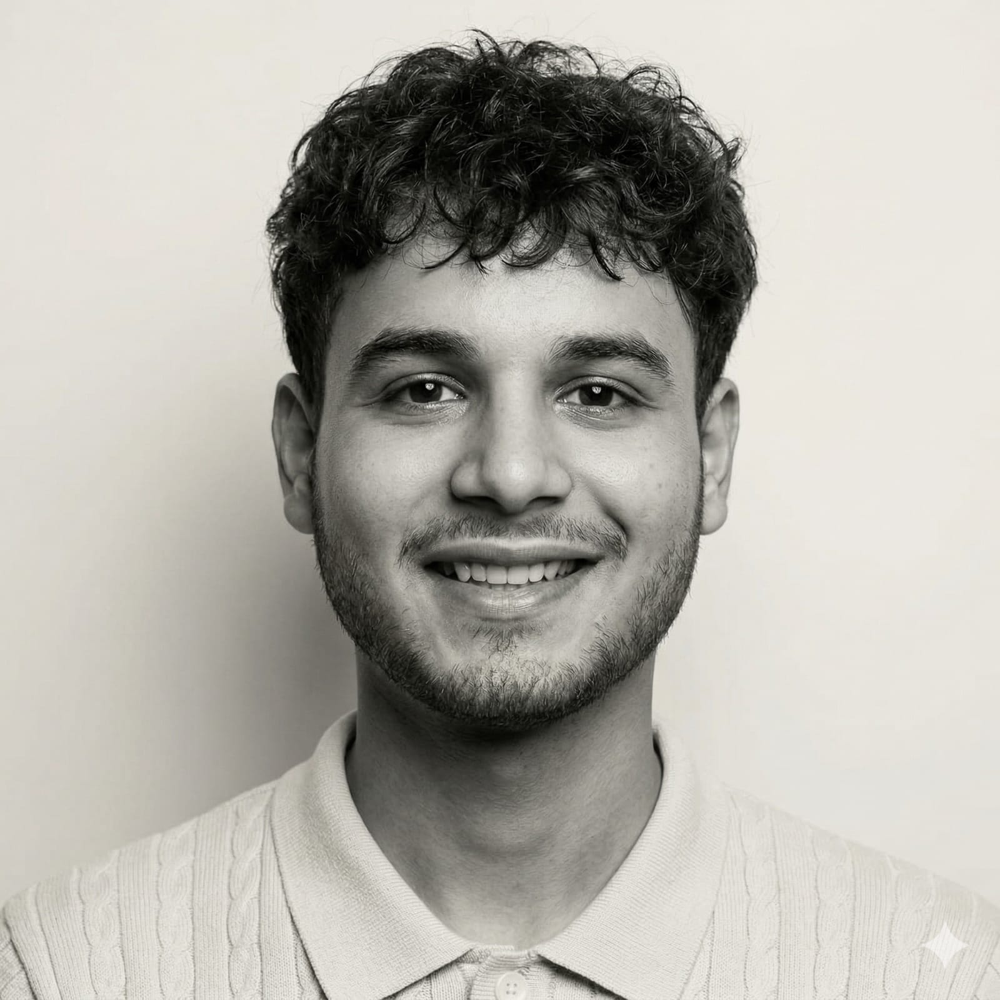

I'm Divy Jain — leading a content distribution team specialising in high-retention content curation, authority positioning, and audience growth systems.
Our team's work lives at the intersection of storytelling and intent. Every cut is deliberate. Every hook is tested against what actually makes people stop scrolling.
Alongside running our agency, I'm pursuing a BTech in AI & Data Science and a BS in Computer Science, while serving as Domain Head for Video Editing at the Media & Tech Club.
A track record built across freelance, production, and student leadership roles.
Editing content under the Okak Production brand, working on creative strategy and production pipelines for client deliverables across niches including health and lifestyle.
Curating podcast and interview clips for client growth using a strict Hook–Body–Ending methodology with verbatim accuracy and high-value zone scanning.
Independent editing work spanning dental, nephrology, AI/tech, and coaching niches. Delivering talking-head edits, podcast clips, and promotional content for clients globally.
Leading the video editing domain within the club and coordinating cross-team production projects. Previously in the graphic design support team before moving into a leadership role.